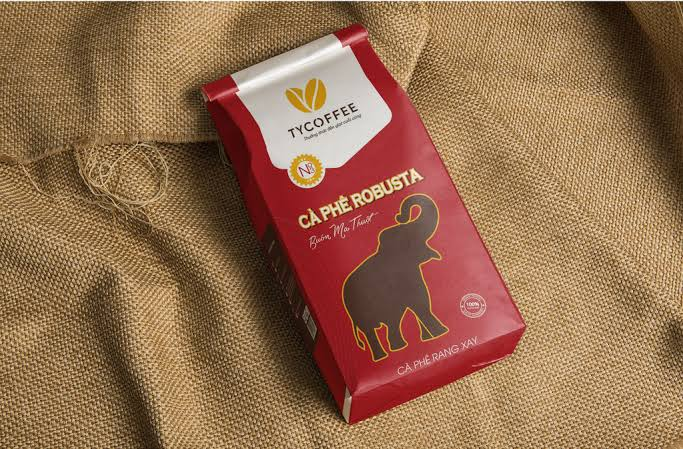
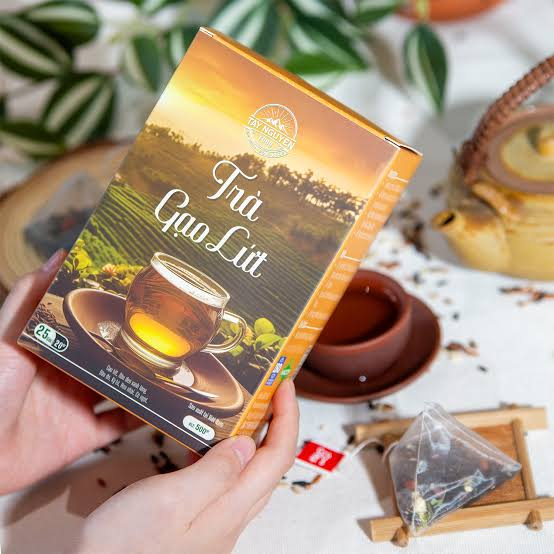
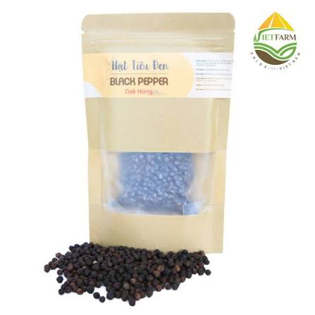
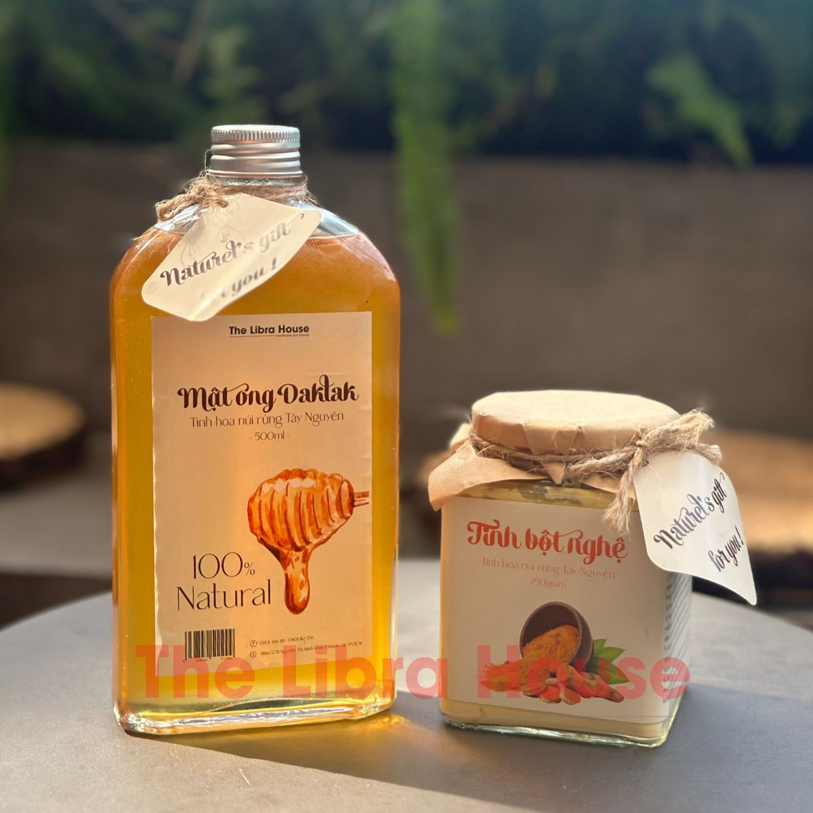
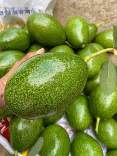
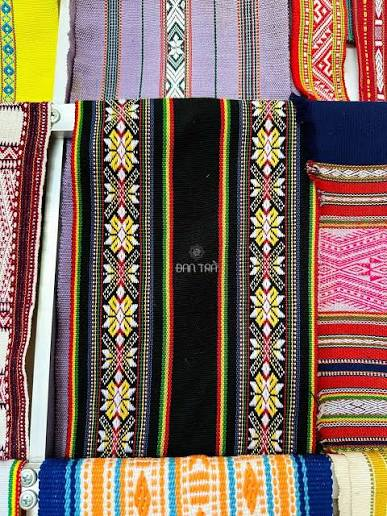

Cà phê Buôn Ma Thuột
Hương vị đậm đà, đặc trưng của núi rừng Tây Nguyên.
Xem sản phẩmKhám phá các sản phẩm đặc sản nổi bật của Tây Nguyên.

Hương vị đậm đà, đặc trưng của núi rừng Tây Nguyên.
Xem sản phẩm
Thơm ngon, thanh mát, mang đậm hương vị tự nhiên.
Xem sản phẩm
Hạt tiêu đen, hương vị cay nồng, chất lượng cao.
Xem sản phẩm
Ngọt ngào, tinh khiết, được khai thác từ rừng nguyên sinh.
Xem sản phẩm
Thơm ngon, béo ngậy, giàu dinh dưỡng và hương vị đặc trưng của vùng đất Tây Nguyên.
Xem sản phẩm
Những sản phẩm thủ công tinh xảo, mang đậm bản sắc văn hóa của các dân tộc Tây Nguyên.
Xem sản phẩm